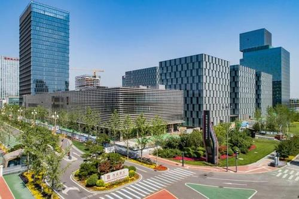

在经受新冠肺炎疫情、整体经济下行压力等不利因素的影响下，我省科技创新的脚步依然在加快。记者今天从省科技厅获悉，今年前三季度，我省“五个100”重大科技创新项目完成全年投资计划的8成，实现销售收入131.08亿元，上缴税收7.27亿元；我省共实现技术合同成交额327.54亿元，同比增长39%。
党的十九届五中全会公报提出，坚持创新在我国现代化建设全局中的核心地位，把科技自立自强作为国家发展的战略支撑。湖南着力打造具有核心竞争力的科技创新高地，深入实施创新引领开放崛起战略，不断完善创新体系，加快建设科技强省。
省科技厅相关负责人介绍，“十四五”时期，湖南将坚持面向世界科技前沿、面向经济主战场、面向国家重大需求、面向人民生命健康，着眼长远，持之以恒地实施关键核心技术攻关行动，着力解决“卡脖子”技术难题。
加强基础研究与应用基础研究，实现更多“从0到1”的突破，取得一批原创性成果。加强重大科学基础设施和重大创新平台建设，抢抓国家重点实验室重组机遇，布局创建前沿领域、学科交叉融合领域重大创新平台。
坚持围绕产业链部署创新链，围绕创新链布局产业链。加强对科技创新特色优势领域和颠覆性前沿领域的谋划部署，主动布局数字经济、碳基材料、生命科学、人工智能、自主可控、量子计算、深海深空深地等前沿技术研发应用，通过突破性的成果培育新业态，壮大新产业。
进一步加大创新主体培育力度，实施高企增量提质行动，完善“科企-高企-独角兽-上市企业”的创新创业生态链。实施企业研发经费奖补计划，推动省内优势领域龙头企业建设高水平研发中心。开展湖南省科技型企业知识价值信用贷款改革试点和科技型企业股权融资引导基金改革试点，解决科技型企业融资难、融资贵的问题。
加快建设创新人才高地，大力培养集聚高水平人才团队。编制全省中长期人才发展规划，深化芙蓉人才行动计划，统筹实施高层次创新创业团队支持计划。按照一事一议、柔性引才的方式，引进一流科技人才和顶尖创新团队。

湖南文化产业网版权所有 (c) All Rights Reserved.
未经湖南文化产业网书面特别授权，请勿转载或建立镜像